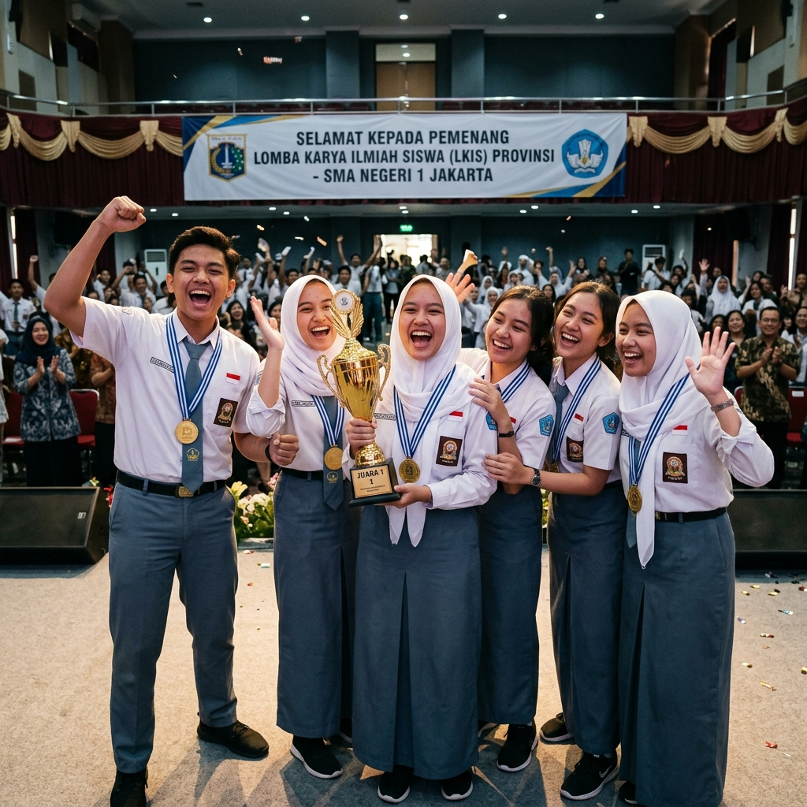

Prestasi
12 Agustus 2024
|
Admin
Siswa RPL Sabet Juara 1 LKS Web Tech Tingkat Provinsi
Tim Rekayasa Perangkat Lunak berhasil mengharumkan nama sekolah dengan aplikasi manajemen sampah berbasis IoT yang dikembangkan selama kompetisi.
Baca Selengkapnya